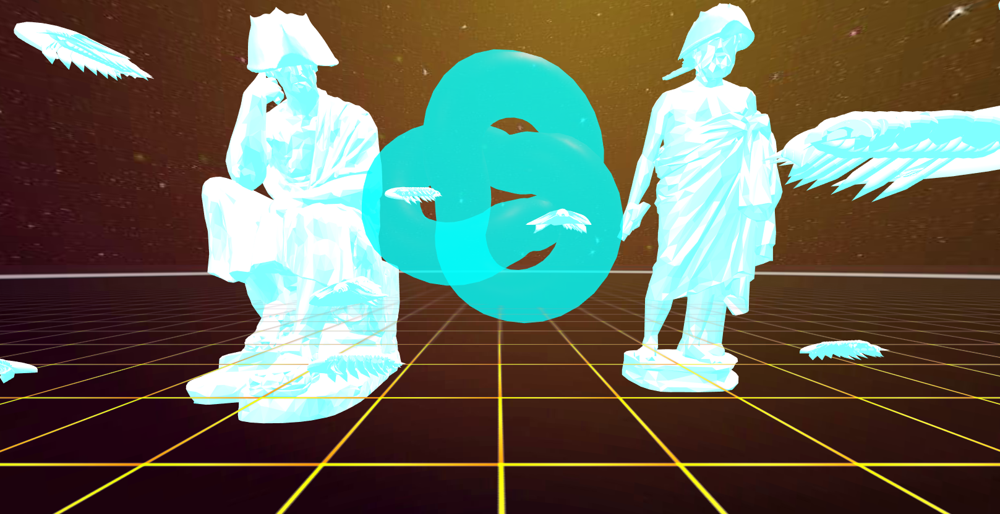
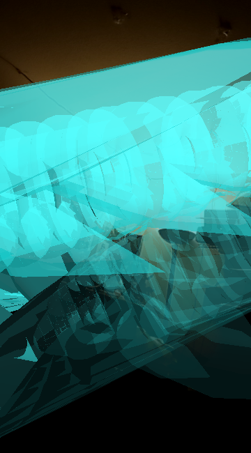
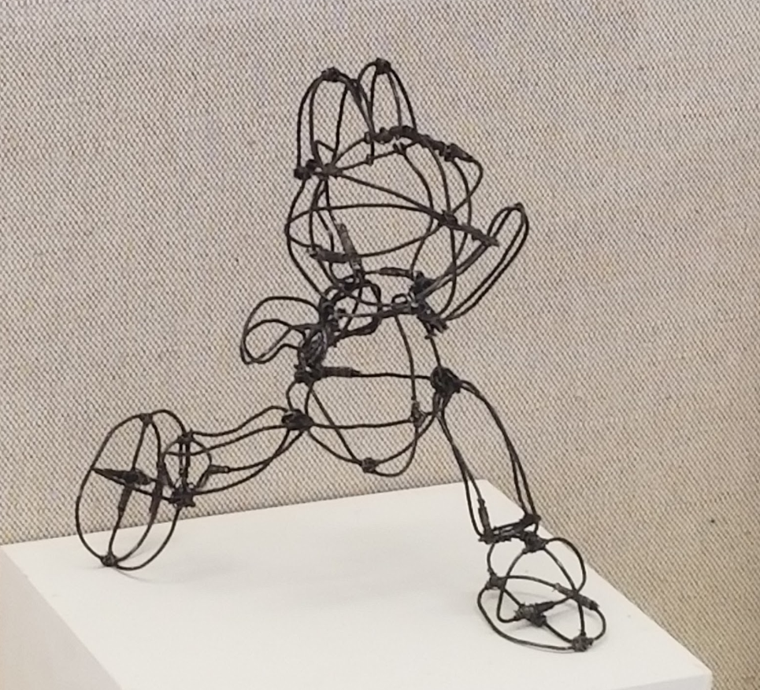
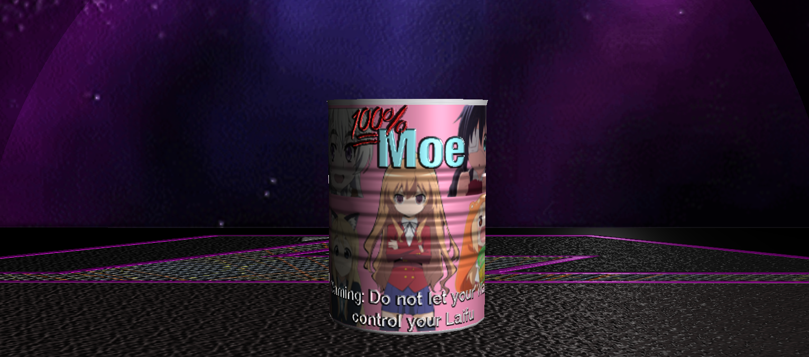

3D Models & Sculpture

2019 Concrete Multiple Sculpture, Exhibited in Gallery V, Art Building, Department of Art and Art History, San Jose State University.
By combining the avocado with the ankylosaurus the piece highlights the similarities between the two organisms. Ankylosauruses died out due to global warming; today, avocados are currently threatened by drying soil, and wildfires.
3D Printed Object, 2.5x3.5x1 in, pictured is a rendered image of the 3D mesh for print. This piece’s life began while researching articles related to additivism and posthumanism. It is inspired by Eurythenes Plasticus which was a new species of crustacean whose discovery was published the week this piece’s inception. The organism lives in the virgin landscape of the Mariana trench thought to be untouched by humanity. Unfortunately however this animal’s name is derived from the type of microplastic pollution found throughout its body. Plastic is a poison created by man that will remain on earth long after our departure. The bodies of future organisms will continue to contain plastic and it will be left behind in their fossilized corpses. The file to print this piece will be distributed online for free. My wish is for as many prints of this to be made for future paleontologists to find. It will be the new method of "set in stone" documentation, used to date future fossils and rock layers to mark the Anthropocene.
Download OBJ


2020 Taffy Sculpture, 3x9.5x5 in
A taffy reconstruction of the extinct prehistoric animal Hallucigenia. Salt water taffy was chosen for this sculptures construction to match how the animal lived in the ocean,and was a soft bodied organism. On theme with the animal being extinct the taffy sourced was expired and headed for landfill before recovery. It was also chosen for its vibrant colors and ability to melt to immitate the affects of a good and bad trip on hallucinegenic drugs which the animal was named after. The pictures show the two forms fun and living vs horrific and decaying. The name of the piece is in reference to the long lasting affects of hallucinegens on the body and how trips can trigger flashbacks. The name also references keyword abilities in the card game Magic the Gathering, meaning to use from the graveyard.

2020. VR Environment, "The space brothers have been waiting. Transcend your mortal shell and ovbserve the form of peak evolution. Enter the Unarius Academy of Science. A digital plane made of all the knowledge in the universe." -Fictional cult member
This piece was inspired by the beliefs of the Unarian religion, a group of people who believe we're reliving past lives that happened long long ago in a galaxy far far away. They believe their founder Ernest Norman was followed by 2 spirits that entrusted him in building a library housing the knowledge of the universe. The spirits, beings known as the space brothers would one day come in physical form once we were ready, bringing the necessary knowledge for the library. This piece puts an imaginative outsider spin on their prophecy.
Horseshoe crabs and their trilobite ancestors being the vehicles representing the wise beings from millions of years ago. In science those animals are known for being evolutionarily successful in their respective niches. Their prevalance through millions of years has helped scientists date relative fossils and guage the ecology. Today horseshoe crabs play a vital role in the delivery of knowledge, their blood being harvested in great quanities for their high copper density, to produce electronics, potentialy threatening the species.
This piece was inspired by the beliefs of the Unarian religion, a group of people who believe we're reliving past lives that happened long long ago in a galaxy far far away. They believe their founder Ernest Norman was followed by 2 spirits that entrusted him in building a library housing the knowledge of the universe. The spirits, beings known as the space brothers would one day come in physical form once we were ready, bringing the necessary knowledge for the library. This piece puts an imaginative outsider spin on their prophecy.
Horseshoe crabs and their trilobite ancestors being the vehicles representing the wise beings from millions of years ago. In science those animals are known for being evolutionarily successful in their respective niches. Their prevalance through millions of years has helped scientists date relative fossils and guage the ecology. Today horseshoe crabs play a vital role in the delivery of knowledge, their blood being harvested in great quanities for their high copper density, to produce electronics, potentialy threatening the species.

2020. Interactive Augmented Reality, Intergalactic Spirit "The spirit you see means you have a greater purpose. Are you one of the chosen? Can you make contact?" -Fictional cult member This piece was inspired by the beliefs of the Unarian religion, a group of people who believe we're reliving past lives that happened long long ago that happened in a galaxy far far away. They believe their founder Ernest L. Norman was followed by spirits that instructed him that his life mission was to build a library of the universe. This piece puts an imaginative outsider spin on Ernest L.Norman’s experience. There are little details of the specifics of his experience so I propose two questions. What would alien life look like? Animals adapt and evolve to their environment, any form of life could have reached higher intelligence. Had earth been slightly different from the one we know today, animals that dominated the earth prior to us could have filled our shoes. This piece gives the role of intelligent life to the trilobites, the animals who lived for most of earth’s life. How would we communicate with extraterrestrial life? This piece makes use of real radio signals captured from space, speculated to be originating from extraterrestrial life. The spirit you see in Augmented reality is your own guide to your life’s purpose. What kind of message can you decipher from it when you make contact?
if you are on mobile tap here to view piece. otherwise scan this QR code
if you are on mobile tap here to view piece. otherwise scan this QR code

2019. Steel wire Sculpture, Exhibited in SJSU display case #D3 Art Building, Department of Art and Art History, San Jose State University.
This piece is a reinterpretation of a stuffed toy in steel wire. The wire industrial wire juxtaposes its form and conveys wanting what you can't have.

I turned a simple cylinder into a complex can. This was an exercize in planar mapping for texture,bump, and specular. The goal was to create and market a fictional brand/product inspired by 2000's era anime. It was also an exercize in lighting and rendering in Maya's classic redering engine.


With this I wanted to recreate a complex object that I’m familiar with in Maya. It is a Madcatz TE2+ that is personalized for when I participate in game tournaments. I use the fight stick very often so I wanted to map it out with my hands. I wanted to make use of specular and bump maps to detail the texture of the different plastics and acrylics of the product.